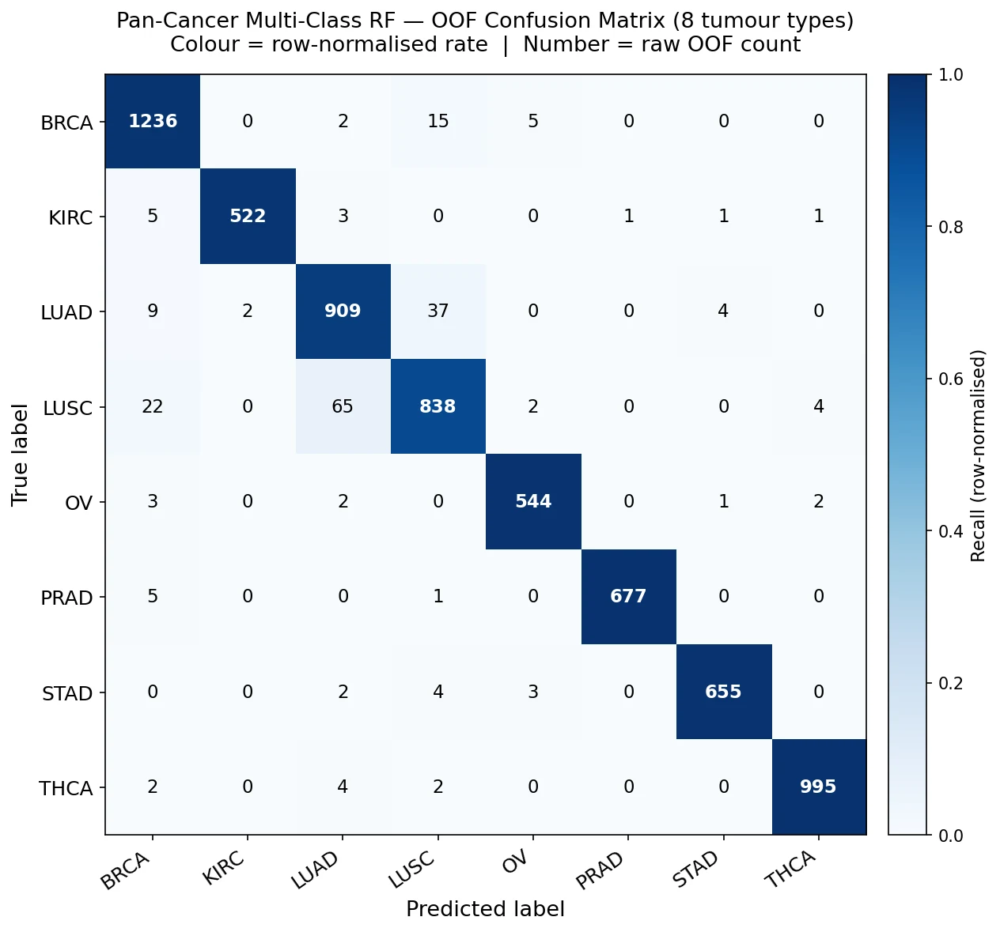
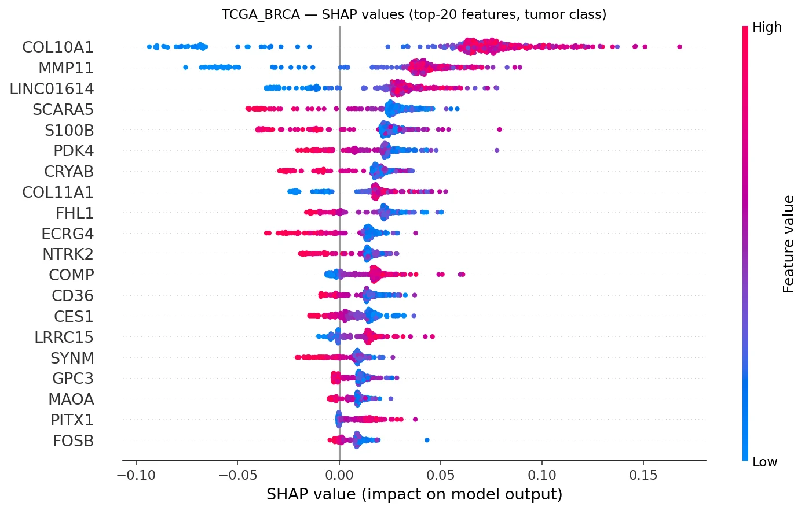

M.Sc. Thesis 2026
Identification of Biomarkers from Gene Expression Data
Python / scikit-learn / PyTorch / SHAP / PostgreSQL
- Pan-cancer accuracy
- 0.968 6,585 tumour samples, 8 tumour types
- ROC-AUC
- 0.971–1.000 tumour vs. normal, 7 TCGA cohorts
- F1 Macro
- 0.895–0.988 patient-level 5-fold GroupKFold
- Permutation test
- p < 0.01 100 permutations, all tested cohorts
Pipeline
- DataTCGA RNA-seq from the GDC API into PostgreSQL; GTEx v8 healthy tissue as external control
- SelectionRandom Forest per cohort, features chosen inside each training fold to prevent leakage; SMOTE on training folds only
- InterpretabilityDecision Trees with human-readable rules, SHAP attributions
- ValidationPermutation tests, learning curves, KEGG pathway enrichment, comparison with COSMIC drivers
- SurvivalKaplan–Meier analysis and DeepHit risk triage


